04 · Logos
FP, sempre.
Marca Fred Parreira em três famílias: símbolo (FP), assinatura (wordmark) e marca completa (lockup). Sete variações cobrem todos os contextos. Use sempre o arquivo original, jamais recrie em código ou outras ferramentas.
Combinações oficiais (aprovadas): cada logo abaixo está aplicado sobre o fundo recomendado ★, e os botõezinhos no rodapé mostram apenas as combinações que funcionam. Combinações ausentes do toggle são proibidas: jamais usar.
Símbolo · FP

★ Aplicar sobre PRETOtambém combina: branco · cinza
testar:
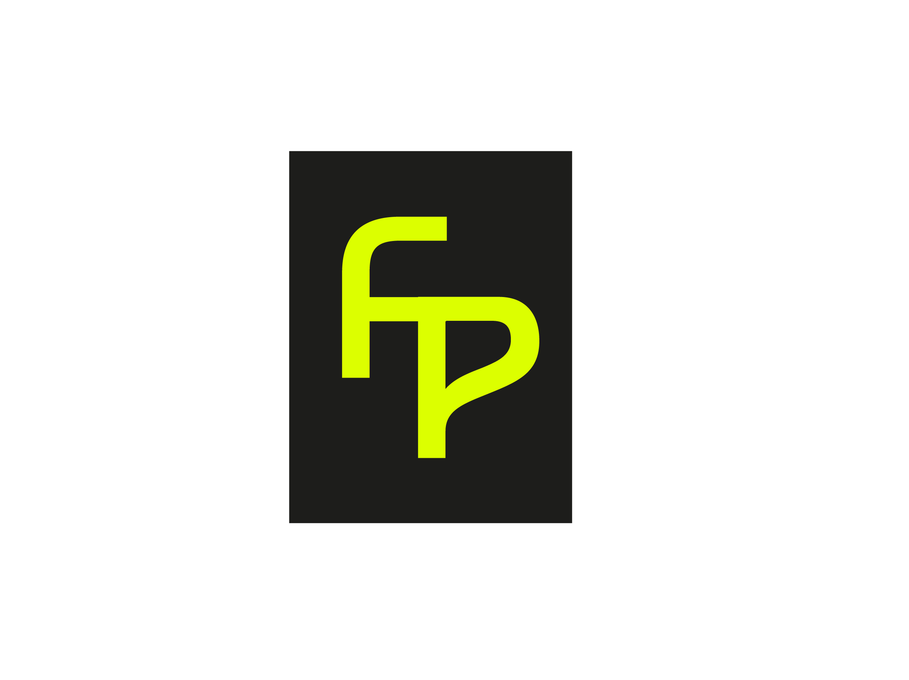
★ Aplicar sobre BRANCOtambém combina: lemon · off-white
testar:
Assinatura · Wordmark
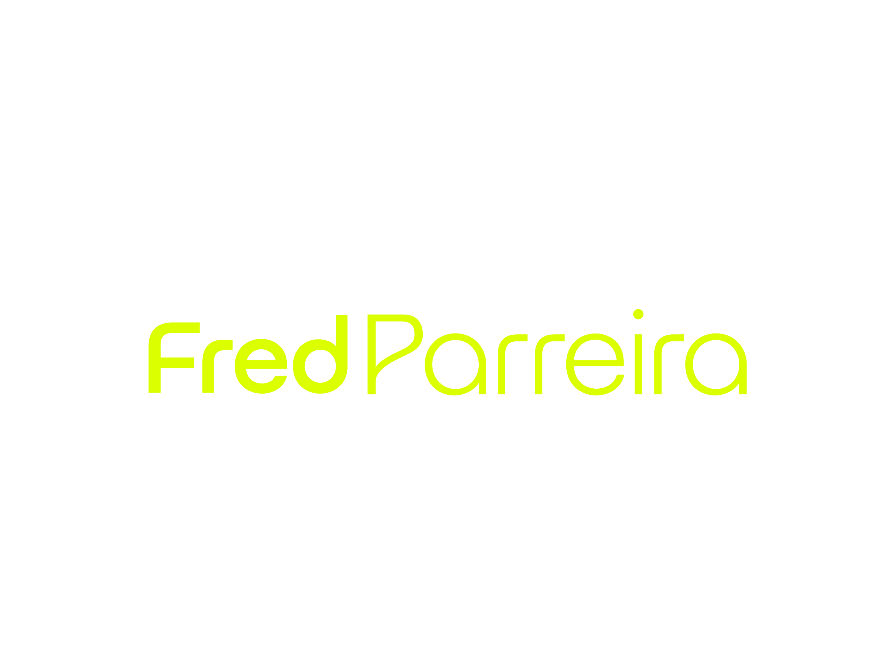
★ Aplicar sobre PRETOtambém combina: cinza
testar:
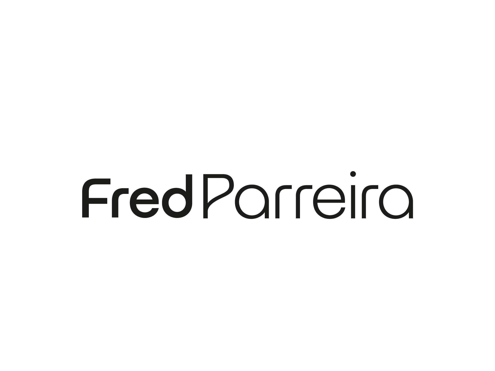
★ Aplicar sobre BRANCOtambém combina: lemon (muito bom) · off-white
testar:
Marca Completa · Lockup horizontal
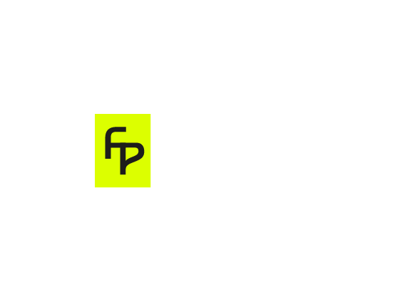
★ Aplicar sobre PRETOtambém combina: cinza
testar:
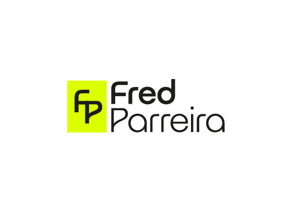
★ Aplicar sobre BRANCOtambém combina: off-white
testar:
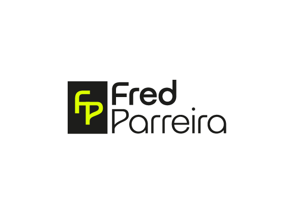
★ Aplicar sobre BRANCOtambém combina: lemon · off-white
testar:
Assets gráficos · Objetos Inteligentes
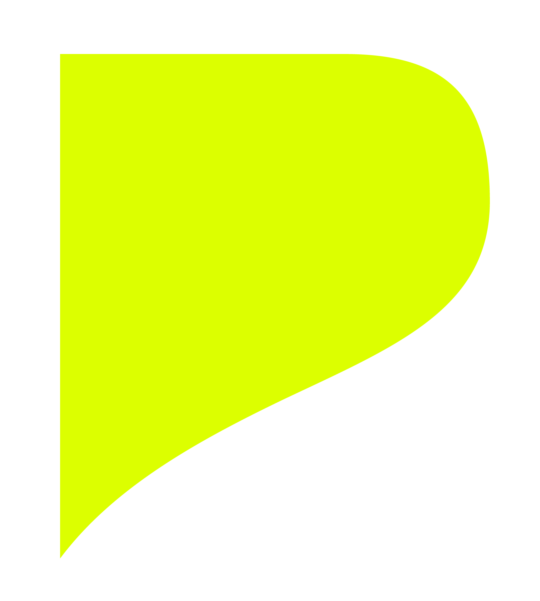
fundo:
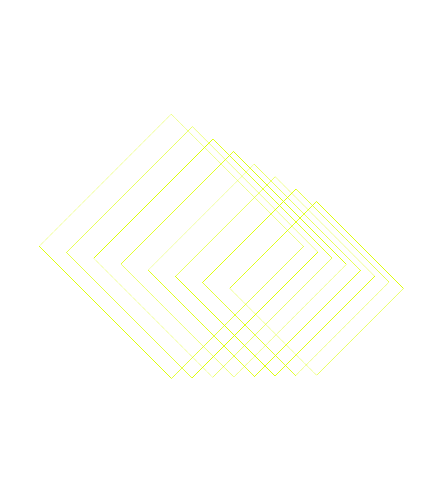
fundo:
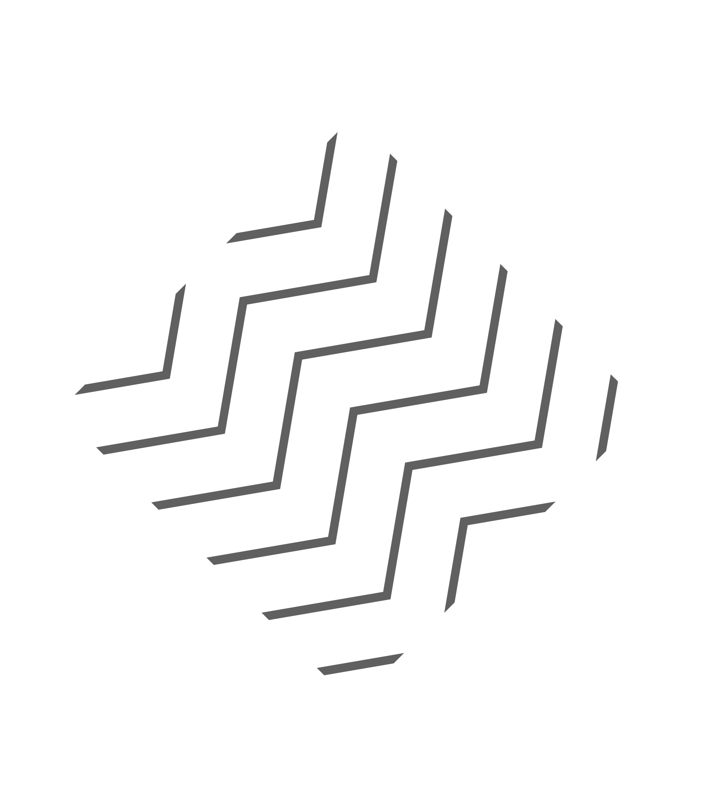
fundo:
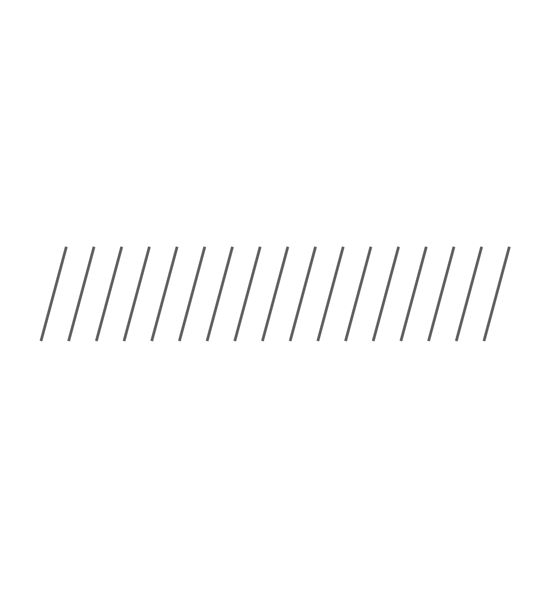
fundo:
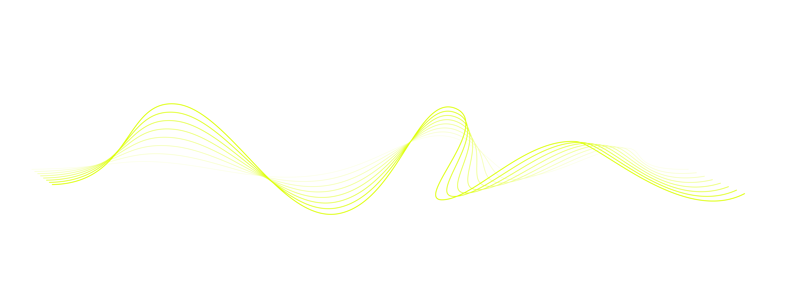
fundo:
✅ Sempre fazer
- Usar a versão correta para cada fundo (claro / escuro / primária)
- Manter altura da letra "F" como margem livre ao redor
- Aplicar o SVG original, com proporção preservada
- Usar somente as cores da paleta oficial
❌ Nunca fazer
- Aplicar em cores fora da paleta (vermelho, dourado, etc.)
- Distorcer proporções (esticar, achatar, inclinar)
- Adicionar sombra, gradiente ou brilho
- Usar versão clara em fundo claro ou escura em fundo escuro
- Recriar o logo em código ou ferramentas externas